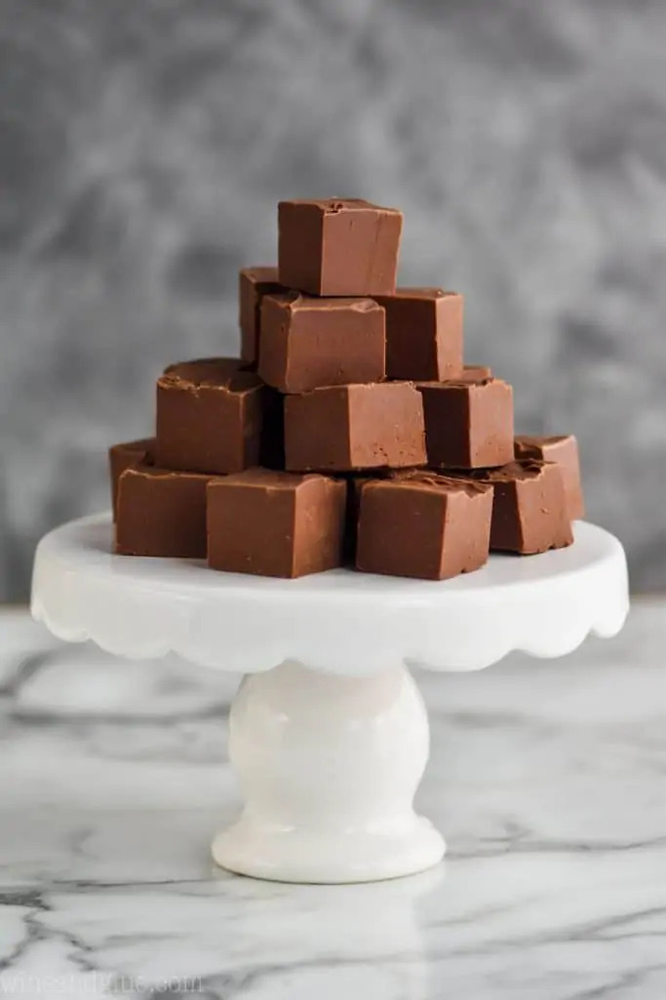

Fudge

Description
This recipe will show you step by step on how to make fudge. The prep time is 10 minutes, with a cooking time of 5 minutes. Will serve 36 squares of fudge.
Ingredients
- 3 cups chocolate chips
- 14 ounces sweetened condensed milk
- 1 teaspoon vanilla extract
Steps
- Line an 8 inch by 8 inch baking dish with aluminum foil or two pieces of parchment paper overlapping to make an X.
- In a medium saucepan, combine the chocolate chips and sweetened condensed milk.
- Place the pan over medium low heat. Stir consistently until the chocolate is partially melted. Stir in the vanilla extract.
- Continue stirring until the chocolate is fully melted and the mixture is smooth and starts to turn shiny.
- Mix in the dry ingredients until combined.
- Pour the mixture into the prepared pan. It will be very thick – if it doesn't pour well because of the thickness, don't stress, you're still on the right track. Once it is all in the pan, you can gently shake the pan back and forth to help it settle. You can also use a rubber spatula to spread it.
- Allow the fudge to completely set. This can be done on the counter top and will take about four hours.
- Remove the fudge from the pan and take off the aluminum foil. Trim off the rounded edges from the pan. Cut the fudge in half one way and then the other to make four equal squares. Cut each small square into 9 equal pieces by cutting into thirds one way and then the other. This will result in 36 equal pieces of fudge.
- Enjoy right away or store in an airtight container for up to two weeks.